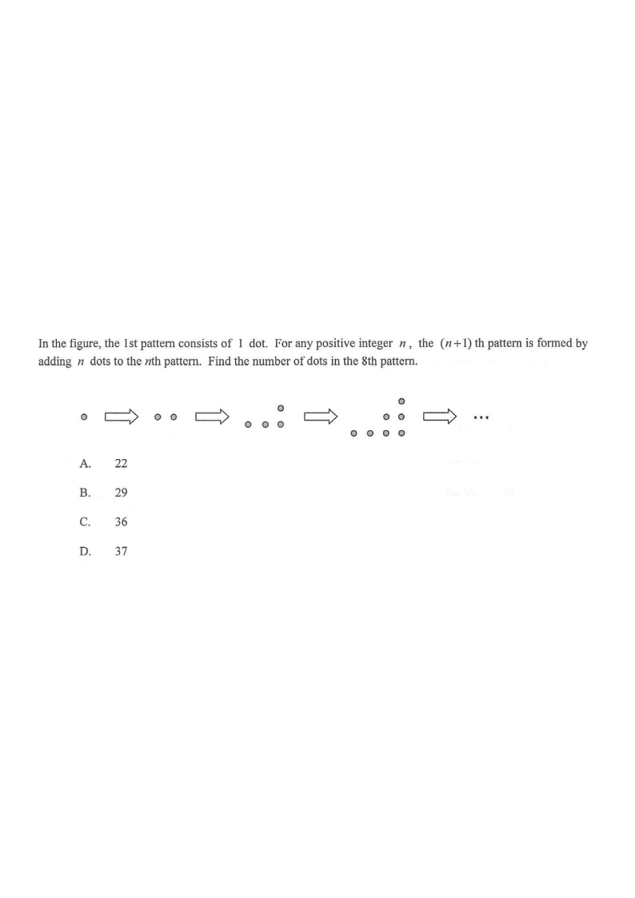

Step 1: The 1st pattern has 1 dot. Each new pattern adds $n$ dots.
In the figure, the 1st pattern consists of 1 dot. For any positive integer $n$, the $(n+1)$th pattern is formed by adding $n$ dots to the $n$th pattern. Find the number of dots in the 8th pattern.

Let $T(m)$ be the number of dots in the $m$th pattern.
Given: $T(1) = 1$.
For every positive integer $n$,
the $(n+1)$th pattern has $n$ more dots than the $n$th pattern:
$T(n+1) = T(n) + n$
Hint: read the rule as “\(+n\) to get from the \(n\)th to the \((n+1)\)th pattern”.Put $n = 7, 6, 5, \ldots, 1$ into the rule:
Replacing each term by the one before it:
$T(8) = T(7) + 7 = \bigl(T(6)+6\bigr)+7 = \cdots = T(1) + 1 + 2 + \cdots + 6 + 7$
And since $T(1) = 1$:
$T(8) = 1 + 1 + 2 + 3 + 4 + 5 + 6 + 7$
Hint: each line “unwinds” one more recurrence — the same idea as the marking scheme’s line-by-line substitution.Use $1+2+\cdots+7 = \dfrac{7 \times 8}{2} = 28$.
$T(8) = 1 + 28 = 29$
Check with the totals: $1, 2, 4, 7, 11, 16, 22, 29$ — adding $1,2,3,4,5,6,7$ gives $29$. ✓
Hint: $T(8) = 29$ corresponds to option B.Question. A sequence satisfies \(T(n+1)=T(n)+2n\) with \(T(1)=3\). Find \(T(6)\).